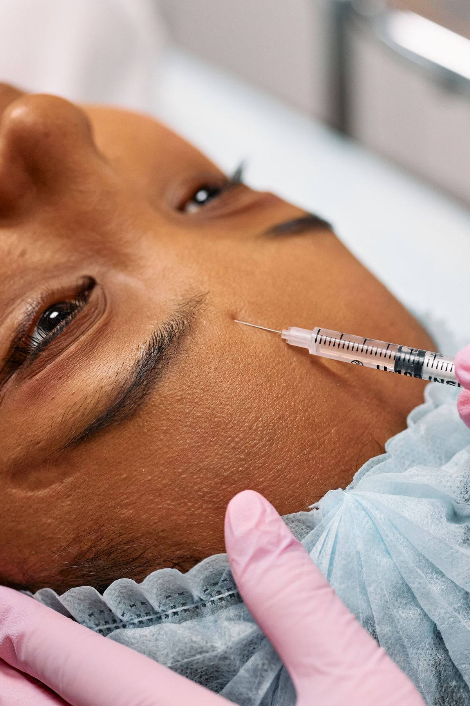
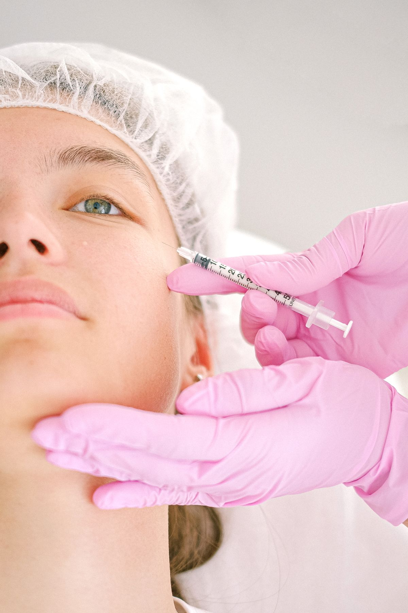
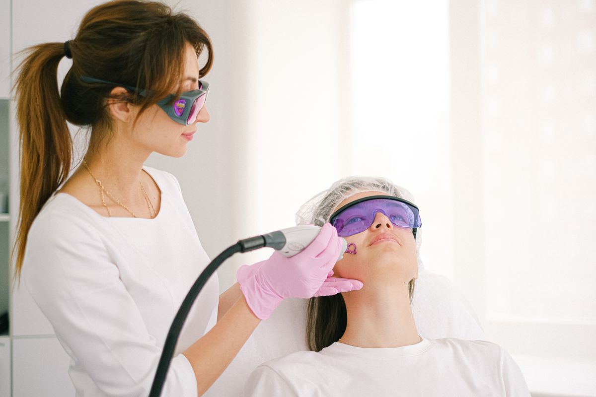
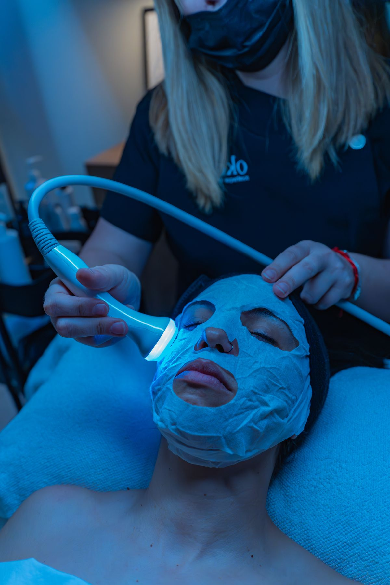
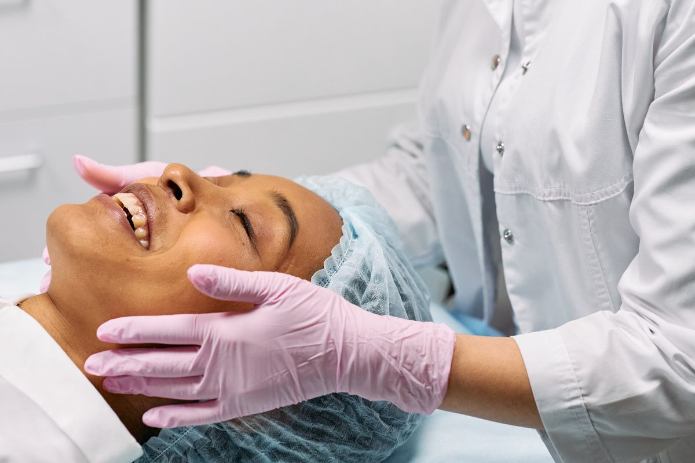
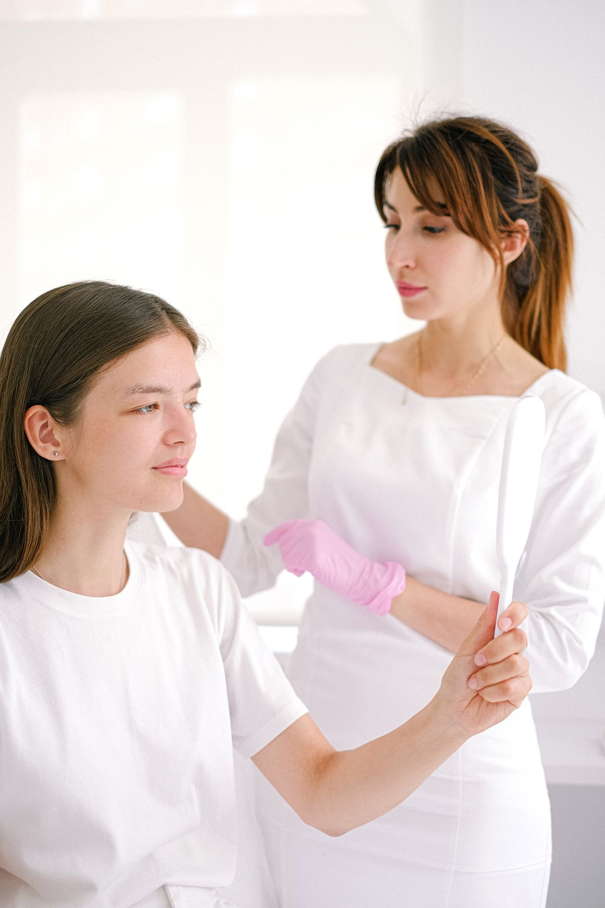
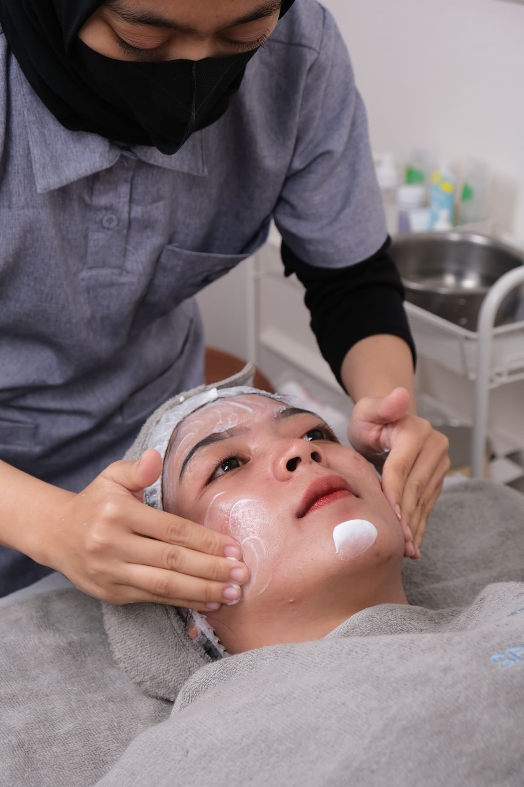

فیلر و تزریق ژل
حجمدهی و فرمدهی لب، چانه، گونه، زیر چشم و خط خنده — با حفظ تناسب طبیعی اجزای صورت.
در آرت اسکین، تزریق و درمانهای زیبایی توسط خودِ پزشکان متخصص پوست انجام میشود — دکتر وحید ظفرمند و دکتر سولماز نخعیزاده — با یک اصل ساده: حفظ تناسب طبیعی اجزای صورت، نه تغییر اغراقآمیز آن.

همه خدمات زیر نظر مستقیم متخصصین پوست و بر اساس معاینه و نیاز واقعی پوست شما انتخاب میشوند.
حجمدهی و فرمدهی لب، چانه، گونه، زیر چشم و خط خنده — با حفظ تناسب طبیعی اجزای صورت.

رفع چینوچروکهای حرکتی پیشانی، خط اخم و دور چشم با تزریق دقیق توسط متخصص پوست.

آبرسانی و جوانسازی پوست با مزوژلها و کوکتلهای مزوتراپی، از جمله جالوپرو، بر اساس نیاز پوست.

درمان کمکی ریزش مو و جوانسازی پوست با پلاسمای غنی از پلاکت خون خودتان، در کنار درمان دارویی.

حذف موهای زائد با دستگاه لیزر کندلا؛ با تکمیل منظم جلسات برای رسیدن به بهترین نتیجه.

بهبود بافت پوست، جای جوش و شلی پوست با امواج رادیوفرکانسی فرکشنال، زیر نظر پزشک.

لیفت و سفتکردن پوست صورت و گردن با امواج اولتراسوند متمرکز، بدون جراحی و برش.

لیفت صورت با نخهای آپتوس برای افتادگیهای خفیف تا متوسط، با نتیجهای طبیعی و متناسب با چهره.
آرت اسکین مطب مشترک دو متخصص پوست، مو و لیزر است؛ معاینه، انتخاب روش و انجام درمان را خود پزشکان انجام میدهند.
متخصص پوست، مو و لیزر
تزریق فیلر و بوتاکس، جوانسازی و درمانهای ترکیبی پوست و مو — با تأکید بر حفظ تناسب طبیعی اجزای صورت در تزریقها.
متخصص پوست، مو و لیزر
درمانهای زیبایی و جوانسازی پوست، لیزر و روشهای غیرجراحی لیفت — بر اساس معاینه و نیاز واقعی هر مراجعهکننده.

تزریقها و درمانهای دستگاهی زیر نظر مستقیم دکتر ظفرمند و دکتر نخعیزاده انجام میشود.
اصل ما در تزریق فیلر، حفظ تناسب اجزای صورت است؛ نتیجه باید شبیه خودتان باشد، فقط شادابتر.
از جمله لیزر موهای زائد کندلا و نخهای لیفت آپتوس — انتخاب روش بر اساس پوست شما، نه برعکس.
مجتمع تجاری آوان در بلوار اندرزگو؛ رزرو نوبت با یک پیام واتساپ یا تماس با پذیرش.



برای دیدن نمونهکارها و نتایج واقعی درمانها، پیج اینستاگرام کلینیک را ببینید: @artskin.ir
از واتساپ یا تلفن پذیرش نوبت میگیرید و در جلسه اول، پوست و موی شما معاینه میشود.
پزشک بر اساس معاینه، روش مناسب — تزریقی، دستگاهی یا ترکیبی — و تعداد جلسات را مشخص میکند.
درمان توسط متخصص پوست و با مواد و دستگاههای استاندارد انجام میشود.
نکات مراقبت بعد از درمان را دریافت میکنید و برای جلسات بعدی و ارزیابی نتیجه هماهنگ میشوید.
سادهترین راه، پیام در واتساپ به شماره ۰۹۰۱۱۰۱۰۹۷۶ یا تماس با پذیرش به شماره ۰۲۱۲۶۳۷۲۰۰۵-۶ است. همکاران ما نزدیکترین زمان خالی را با شما هماهنگ میکنند.
بله. قبل از هر تزریق، صورت شما معاینه میشود و پزشک بر اساس تناسب اجزای صورت و خواسته شما، نوع و مقدار ماده را مشخص میکند. اصل ما نتیجه طبیعی و متناسب با چهره خودتان است.
تعداد جلسات به ناحیه، نوع پوست و ضخامت مو بستگی دارد و در جلسه اول مشخص میشود. نکته مهم برای گرفتن بهترین نتیجه از لیزر کندلا، کاملکردن جلسات و مراجعه منظم در زمانهای تعیینشده است.
در بسیاری از موارد، بهترین نتیجه وقتی به دست میآید که PRP در کنار درمان دارویی و بر اساس علت ریزش مو انجام شود. پزشک بعد از معاینه، برنامه درمانی مناسب شما را توضیح میدهد.
آرت اسکین در تهران، چیذر، بلوار اندرزگو، مجتمع تجاری آوان، طبقه چهارم، واحد ۴۰۱ قرار دارد. برای هماهنگی و راهنمایی مسیر میتوانید با پذیرش تماس بگیرید.
پاسخگوی شما در واتساپ هستیم — یا با پذیرش کلینیک تماس بگیرید: ۰۲۱ - ۲۶۳۷ ۲۰۰۵ - ۶